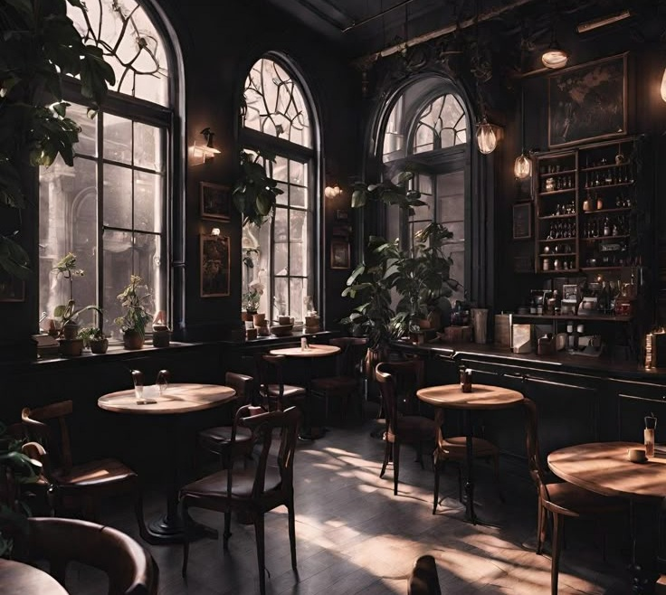

Benvenuti al Cozy Corner
The Cozy Corner nasce dal desiderio di creare un luogo dove studio e relax possano convivere. Un caffè dal cuore caldo, dove puoi lavorare al tuo progetto, leggere un buon libro o semplicemente sorseggiare un cappuccino in pace.
